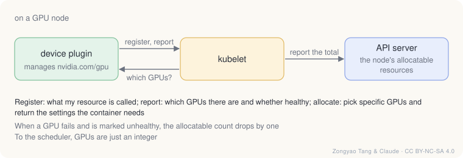
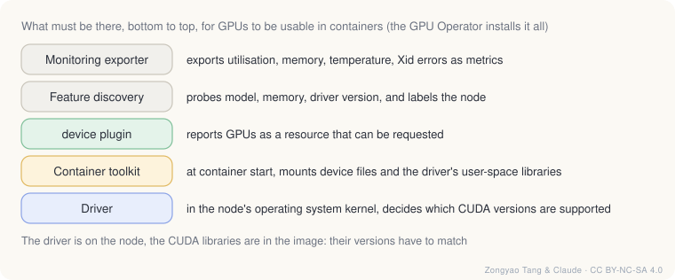
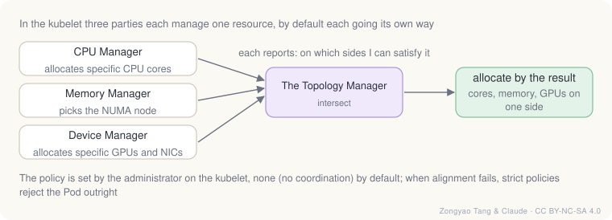
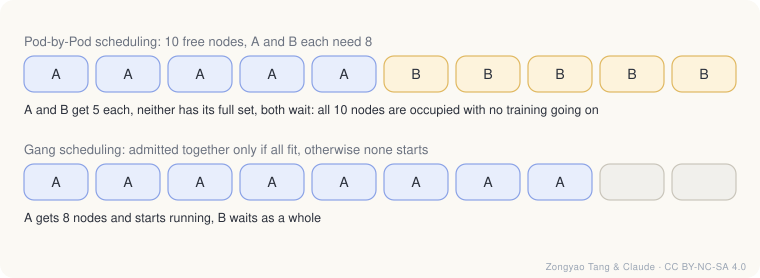
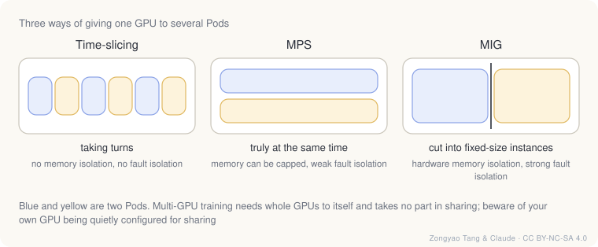

The thread: Kubernetes does not know GPUs by itself, and relies on a plug-in to report them as resources → making GPUs usable in containers needs a whole set of components, which the GPU Operator installs → the decision "which GPUs to give" has two layers: within a machine NUMA has to line up, between machines the network topology has to be considered → a training job wants a whole group of GPUs, and is useless if even one is missing, which calls for gang scheduling and queueing → finally, two ways out when there are not enough GPUs to go round: sharing and preemption. Parts 5 and 7 said again and again that "placement decides performance"; this unit is about who decides placement, and how.
Part 8 · Clusters and platforms (optional)8.2 GPUs in the cluster: devices, scheduling and queueing
Translated by AI (Anthropic's Claude) from the Chinese edition. The Chinese original is the reference.
This unit answersHow does Kubernetes know how many GPUs a machine has? When many people compete for GPUs, who goes first?
Follows 8.1, and returns to part 5: where scheduling places a job's GPUs directly decides which links its communication takes.
- The device plugin: reporting GPUs as an integer resource that can be requested
- The GPU Operator: installing the whole set of components that makes GPUs usable in containers
- Where the GPUs go: line up NUMA within a node, consider network topology between nodes
- Gang scheduling and queueing: give them all, or give none
- When there are not enough GPUs: three ways to share one GPU, and preemption
Explanation
1The device plugin: reporting GPUs as an integer resource that can be requested
Kubernetes itself knows only CPU and memory. Devices such as GPUs are connected through a "device plugin": a plug-in runs on every node and tells the kubelet "this machine has 8 nvidia.com/gpu". After that, GPUs become a resource that can be requested in a Pod, but only in whole numbers, and never overcommitted. Once a Pod is scheduled onto a node, the plug-in decides exactly which GPUs it gets.
The three things the plug-in does.
- Register. When the plug-in starts, it registers with the local kubelet: the resource I manage is called
nvidia.com/gpu. - Report. List which devices this node has, and whether each is healthy. The kubelet reports the total to the API server as the node's allocatable resources. When a GPU fails (say with the Xid errors of 5.1), the plug-in marks it unhealthy, and the allocatable count drops by one.
- Allocate. When a Pod that requested GPUs is scheduled onto this node, the kubelet asks the plug-in "which devices does it get". The plug-in picks specific GPUs, and returns the settings the container needs to use them (device files to mount, environment variables to set).

Between the plug-in, the kubelet and the API server Requesting them in a Pod.
resources: limits: nvidia.com/gpu: 4The rules (from the Schedule GPUs page of the Kubernetes documentation):
- Whole numbers only. There is no "0.5 of a GPU".
- Written in limits; requests may be left out, but if written must equal limits. In other words GPUs cannot be overcommitted: on a node with 8 GPUs, the total requested by all Pods never exceeds 8.
- At any moment a GPU is given to only one container (unless sharing is configured separately, last card).
What the container sees. A container sees only the GPUs given to it, numbered from 0 again. Request 4 and
nvidia-smishows 4, and in PyTorch they arecuda:0tocuda:3, whatever their actual numbers on the node.What kind of GPUs a node has. A count alone is not enough; training jobs often need to specify the model. Another component automatically labels nodes with descriptions of their GPUs (model, memory size, count and so on). Pods refer to these labels with
nodeSelectoror affinity rules, and so land only on nodes with a particular model (there is an example in 8.1's YAML).The limits of this model. A single integer cannot express the relationships between devices, or their attributes: whether these 4 GPUs are on the same NUMA node; how to say "two GPUs under the same PCIe switch chip, plus the network card nearest them". Kubernetes is replacing it with a more expressive way of requesting resources (dynamic resource allocation), but the integer model is still the most widespread today. The next two cards cover how placement is handled under this model.
An analogyLike managing a car park: the management office (Kubernetes) originally handled only ordinary spaces. The charging spaces are registered and allocated by someone the charging company sends (the plug-in). Spaces can only be given out whole, never half a space.
So in Kubernetes' eyes a GPU is only a count. The scheduler knows "this node has 3 left", but not which 3, whether they have NVLink between them, or which network card they are near. These details have to be filled in by the mechanisms covered next.
Builds on The scheduler chooses a machine for each Pod by its resource requestsNVLink plus NVSwitch: a private line between every pair of GPUs- Register. When the plug-in starts, it registers with the local kubelet: the resource I manage is called
- The plug-in is just one link. Between a node "having GPUs installed" and "running training in containers" there are several more.
2The GPU Operator: installing the whole set of components that makes GPUs usable in containers
For containers on a node to use GPUs, several things are needed: the driver in the kernel, a tool that lets the container runtime inject GPU devices and the driver's libraries into containers, the device plugin, a component that labels nodes, and a component that exports monitoring metrics. NVIDIA's GPU Operator installs and maintains them as a group of programs managed by Kubernetes itself, keeping versions consistent on every node.
What has to be there, bottom to top.
- The driver. In the node's operating system kernel. CUDA programs talk to the GPU through it. Its version decides which CUDA versions can be supported.
- The container toolkit. Containers are isolated, and by default see no GPU devices on the node, nor does the image contain the libraries matching the driver. When a container starts, this tool mounts the device files of the chosen GPUs and the driver's user-space libraries into it.
- The device plugin. Covered in the previous card.
- Feature discovery. Probes the GPUs' model, memory, driver version and so on, and labels the node.
- The monitoring exporter. Exports each GPU's utilisation, memory, temperature, power, Xid errors and so on as metrics a monitoring system can collect. 0.2 warned to find out how the numbers on a monitoring dashboard are collected; this is where they come from.
- (Optional) sharing components. Configure MIG and time-slicing (last card).

What every GPU node needs Why manage them together. These components have version dependencies on each other, and every GPU node needs them. Installing and upgrading them by hand on hundreds of nodes will sooner or later produce inconsistencies. The GPU Operator's way is to make them all containers, deploy them automatically to every GPU node according to its situation, and keep checking that they are working. New nodes joining the cluster get the full set automatically; driver upgrades can be rolled out node by node.
Two points that matter for training.
- The driver is on the node, the CUDA libraries are in the image. The PyTorch in the image brings its own CUDA runtime libraries, which require the node's driver to be at least a certain version. When the driver is too old, the symptom is
torch.cuda.is_available()returning False in the container, or an error as soon as CUDA initialises. - The network is a separate set. The drivers for InfiniBand network cards, and the plug-in that lets containers use RDMA devices, are managed by another similar component (NVIDIA's Network Operator). The kernel module that GPUDirect RDMA needs, from 5.2, is where these two sets meet: the GPU driver has to work with the network card driver. In case 3 of 11.1, that module was not loaded on the new nodes, and this is where the problem was.
What this means for you. You are probably not responsible for maintaining this layer. But when troubleshooting arrives at "the problem is in the node's configuration", knowing what this layer is made of lets you tell those who run the cluster precisely: it is the driver version, a particular kernel module, or no RDMA devices in the container.
A few things you can check yourself inside a container:
nvidia-smi # driver version, how many GPUs are visible python -c "import torch; print(torch.version.cuda, torch.cuda.is_available())" ls /dev/infiniband 2>/dev/null # whether the container has RDMA devices ibstat # if installed, 5.2 ulimit -l # the limit on pinnable memory, 6.3 df -h /dev/shm # how large shared memory is, 8.1
An analogyLike getting water, electricity and gas connected all at once in a new home: you could go to each provider separately, but it is easy to miss one, or for their fittings not to match. Hand it to one agent who installs everything from one checklist, and also looks after repairs later.
So problems like "GPUs cannot be used on this node" or "new nodes behave differently from old ones" often find their answer at this layer. The missing kernel module and system settings in case 3 of 11.1 are things the node layer is supposed to guarantee.
Builds on The device plugin: reporting GPUs as an integer resource that can be requestedGPUDirect RDMA: what is registered is not main memory but GPU memoryGPU utilisation measures "busy or not", not "busy doing something worthwhile"- The count is settled. But part 5 stressed again and again: the same 8 GPUs can perform very differently depending on where they are placed and what they sit next to.
3Where the GPUs go: line up NUMA within a node, consider network topology between nodes
"Which GPUs to give this job" is decided at two layers. Between nodes: the scheduler decides which nodes the Pods go to, by default looking only at counts; only with labels and topology-aware scheduling will a job's nodes be close together on the network. Within a node: the kubelet's Topology Manager tries to make a Pod's CPU cores, memory and GPUs fall on the same NUMA node.
Within a node: the Topology Manager. 5.1 explained NUMA: the CPU cores and memory a process uses should be on the same side as the GPU and network card it uses. In Kubernetes these three are allocated by different parts of the kubelet:
- The CPU Manager: allocates specific CPU cores.
- The Memory Manager: decides which NUMA node memory is allocated from.
- The Device Manager (working with device plugins): allocates specific GPUs and network cards.
By default each goes its own way: the GPUs may come from one side and the CPU cores from the other. The Topology Manager's job is to coordinate: it collects from each of them "on which NUMA nodes I can satisfy this request", takes the intersection, and has each allocate according to the result.

Each of the three reports separately, and the Topology Manager takes the intersection It has several policies (set on the kubelet by the cluster administrator):
none: no coordination. This is the default.best-effort: line up as well as possible, and start anyway if it cannot.restricted: the best alignment must be achieved, or the Pod is rejected.single-numa-node: all resources must come from the same NUMA node, or the Pod is rejected.
There is also a "scope" setting: by default alignment is done container by container (
container); set topod, all the containers in a Pod are aligned as a whole.A Pod rejected by the last two policies behaves in a way that is easy to misread: it does not go back to Pending to queue again, but goes straight into a terminated state, with the reason given as a Topology Affinity Error. The documentation says plainly that the scheduler will not try to schedule this Pod again; a higher-level controller has to rebuild it. When a job's Pods fail right after being assigned to a node and the logs show nothing, remember to look at this reason.
For it to take effect for CPUs, two preconditions are needed: the kubelet's CPU Manager set to the mode of exclusive allocation; and the Pod's CPU request a whole number, with requests equal to limits (the Guaranteed class mentioned in 8.1). This is why 8.1 advised "write a training job's requests and limits as equal".
For a job that fills a whole node (wanting all 8 GPUs), what NUMA alignment means is lining each process up with its GPU, and this step is usually done by the start script or by NCCL itself binding according to where the GPUs are (5.1), not by Kubernetes. What went wrong in case 2 of 11.1 was exactly a binding hard-coded in the start script.
Between nodes: keeping a job's nodes together. 5.3 explained the structure of the back-end network: nodes under the same lower switch reach each other in one hop; going to another zone means passing through the narrowed upper layer. The default scheduler knows nothing of this. Ways to tell it:
- Labels. Label each node with its position in the network: which rack, which switch, which zone.
- Affinity rules. Declare on the Pod "I want (or require) to be in the same topology domain as the job's other Pods".
- Topology-aware scheduling. The queueing and scheduling system directly supports "all of this job's Pods must land in the same rack or the same zone; if they do not fit, look one level up". Kueue's documentation describes this feature as scheduling according to the data centre's topology, to optimise communication between Pods.
5.3 mentioned Meta making its scheduler aware of topology and looking for the "minimum cut" for jobs, which is the same thing.
Fragmentation. The stricter the placement requirement, the harder it is to meet. After a cluster has been in use for a while, free GPUs are scattered over many nodes: each node has two or three free, but no node has 8 free; or there are enough free nodes, but spread across different racks. Then a large job may wait a long time, even though in total there are enough resources. "Insufficient nvidia.com/gpu" in 8.1's troubleshooting is often this situation.
Queueing systems ease it by preempting small jobs, or by letting small jobs fill the fragments first. What you can do as a user: do not request stricter placement constraints than you really need; learn the cluster's node specifications, and request whole nodes.
An analogyLike arranging desks for a team: first decide which building and which floor they go to (between nodes), trying not to scatter them across both ends of the campus; then decide which desk each person sits at (within a node), seating people who need to talk often next to each other.
So part 5's "placement decides bandwidth" is delivered in a cluster by these two scheduling-level mechanisms. When they are not configured well, jobs still run, but situations like case 2 of 11.1, "a process on the wrong NUMA side", become the norm.
Builds on The GPU Operator: installing the whole set of components that makes GPUs usable in containersNUMA: processes, memory and devices should be on the same sideThe "distance" between two devices decides which road the data takesThe Clos topology: many small switches built into a network that never narrows between any two pointsForms of parallelism combined in layers by bandwidth- Besides placement, training jobs have another trait the default scheduler does not understand: they want a whole group.
4Gang scheduling and queueing: give them all, or give none
A 64-GPU training job is made of 8 Pods, and can start only when all 8 are in place. The default scheduler looks at one Pod at a time: it may place 5 first, with nowhere to put the remaining 3. These 5 Pods sit on 40 GPUs waiting, and no other job can use them either. Gang scheduling treats a job as a whole: it is admitted only when there are resources for all of it, and otherwise the whole job queues.
What happens without gang scheduling. Two jobs A and B, each needing 8 nodes, are submitted at the same time, and the cluster has only 10 free nodes. The default scheduler handles Pods one by one, and the result may be 5 for A and 5 for B. Neither job can get its full set, both wait, and all 10 nodes are occupied with no training going on at all. This is a deadlock. Even without deadlock, partly placed Pods waste resources.
Gang scheduling. Declare a group of Pods as a whole, stating "at least how many must be in place at once for it to make sense". At scheduling time, first confirm that the resources can hold all of them, then admit them together; otherwise start none. In the example above, A gets 8 nodes and starts running, and B waits as a whole.

The same 10 nodes, two jobs, two outcomes Kubernetes' own scheduler originally had no such ability, and it was always done by add-on systems. Newer versions have begun to fill the gap: according to the Kubernetes documentation, gang scheduling in the scheduler is Beta from v1.37, off by default; it groups a set of Pods under a PodGroup object, and binds none of them to nodes until the minimum number (
minCount) can be met. Whether your cluster uses it depends on the version and the administrator's configuration; for now, queueing systems like those below are more common.Queueing systems. In real clusters this is usually done by a dedicated system, such as Kueue (a Kubernetes community project) or Volcano. Taking Kueue as an example, its documentation is very clear: it does not replace the scheduler, and decides only three things: when a job should wait, when it should be admitted (allowed to create Pods), and when it should be preempted. Once admitted, which node each Pod goes to is still decided by the scheduler.
The way it works is to have jobs created first in a "suspended" state, producing no Pods. Kueue checks quotas and resources, and lifts the suspension only when there is enough. So for a job in the queue,
kubectl get podsshows no Pods; you have to look at the status of the job object, or of Kueue's own objects.What queueing systems manage.
- Quotas. How many GPUs each team or project can use. Cluster administrators divide them up by "queue".
- Borrowing. When one queue's quota is not fully used, other queues can borrow it for a while, so that resources do not sit idle. When the owner needs it, it is taken back, and the borrowing jobs may be preempted as a result.
- Priority and preemption. High-priority jobs can make low-priority jobs give up resources (next card).
- Fairness. Take turns among users by some rule, so that one person cannot submit a thousand jobs and fill the queue.
- Checking that everything is in place. If after admission a job's Pods are not all ready within a set time (say because of the fragmentation of the previous card), the job is withdrawn and requeued, and the resources are given to others.
- Topology. Covered in the previous card.
What this means for you as a user.
- When a job does not start, first tell whether it is queueing (not enough quota or resources, which is normal) or something has gone wrong (8.1's troubleshooting).
- The larger the resources requested and the stricter the placement constraints, the longer the wait. One 64-GPU job may be much harder to schedule than eight 8-GPU jobs.
- Borrowed resources can be taken back at any time. Jobs using them must have checkpoints and automatic recovery (7.4).
- Some clusters limit how long a job may run. Jobs running over are terminated, and again rely on checkpoints to carry on.
An analogyLike a restaurant seating a dinner party of 12: it cannot seat 7 people first and leave the other 5 standing. Either there is a table for 12 so everyone sits down together, or the whole party waits at the door. The 7 who sat first cannot eat, and are taking seats others could use.
So almost every GPU cluster adds a layer of queueing system on top of the default scheduler. It decides which job runs first, how much each team can use, and who makes way when resources run short. When your job is "queueing", this is the layer it is queueing in.
- Finally, two kinds of answer when resources run short. The first kind was covered by 3.6 from the GPU's point of view; here we see how they appear in a cluster.
5When there are not enough GPUs: three ways to share one GPU, and preemption
By default a GPU is given to one container only. To let several tasks share one GPU there are three ways: time-slicing (taking turns, no isolation), MPS (truly at the same time, weak isolation), and MIG (the hardware divided into several independent small instances, strong isolation but fixed shares). The other answer to tight resources is preemption: make low-priority jobs stop and give their GPUs to high-priority ones.
Three ways of sharing. 3.6 explained the principles; here is how they look in Kubernetes.
Way How it appears in Kubernetes Executes at the same time Memory isolation Fault isolation Time-slicing One physical GPU reported as N nvidia.com/gpuNo, taking turns None None MPS Similar, with the MPS service merging the processes' work Yes A limit can be set Weak MIG Each instance cut out is a separate resource Yes, each with its own share Yes, at hardware level Strong - Time-slicing. Once configured, the device plugin says one GPU is several. Kubernetes believes there are more GPUs and gives them to different Pods. In reality these Pods take turns executing on the same GPU. Requesting two shares does not guarantee twice the compute: the GPU simply divides time equally among all the processes on it. There are no limits at all on memory: if one Pod uses up the memory, the others report out-of-memory errors. Suitable only for light loads that trust each other.
- MPS. Several processes' kernels can truly run at the same time on one GPU, giving higher total throughput than time-slicing.
- MIG. A GPU is cut into several instances of fixed sizes, each with its own dedicated compute units and memory, unable to see each other. A Pod requests an instance of a certain size. The best isolation, but the ways of cutting are limited, and shares cut out cannot be borrowed dynamically.

Two Pods on the same GPU What this means for training. Multi-GPU training needs whole GPUs to itself and takes no part in sharing. What to be careful of is the opposite case: you think you have a GPU to yourself, but it is actually configured for time-slice sharing. The symptom is unstable performance, good one moment and bad the next. 0.2 explained that utilisation numbers may come from shared GPUs; 3.6 explained using
nvidia-smito see whether there are other processes on the GPU (inside a container you may not see other containers' processes).A more reliable way is to look at the node's labels. According to the GPU Operator documentation, nodes with time-slicing switched on gain
nvidia.com/gpu.replicas(how many shares one GPU is presented as), and under the default configuration the model labelnvidia.com/gpu.productalso gets a-SHAREDsuffix.kubectl describe node <node name>shows them. The documentation also mentions a limitation: with time-slicing on, the monitoring exporter cannot attribute metrics to specific containers, so on such nodes the number "my container's GPU utilisation" is not reliable (0.2).Preemption. Every job has a priority. When a high-priority job needs resources and there are not enough, the system terminates some low-priority Pods. The process:
- The chosen Pods receive a termination signal.
- There is a grace period (30 seconds by default; it can be set longer in the Pod).
- Those that have not exited when the grace period ends are killed by force.
For a distributed training job, one Pod being preempted means the whole job has to start over (8.1).
Treat preemption as a failure with advance notice. As 7.4 explained, the cost of a failure is "the progress since the last save". Where preemption is better than a hardware failure is that it gives warning:
- The training script catches the termination signal, saves a checkpoint at once, then exits normally.
- The grace period has to be set longer than "the time to save one checkpoint". 7.4's asynchronous checkpoints need care here: on receiving the signal, the script must wait until writing to disk has really finished before exiting.
- The job is requeued, and later carries on from that checkpoint, losing almost no progress.
Once this is done, your job can use borrowed quota and low-priority queues without worry, where resources are usually far more plentiful. This is a direct benefit of carrying 7.4's fault-tolerant design through to the way you use the cluster.
With this, all six layers of 0.1 have been covered. From the algorithm to the cluster, every layer has its own "waiting": waiting for data, waiting for orders, waiting on compute, waiting for the other GPUs, and now, at the cluster layer, "waiting in the queue". The cases of 11.1 tie them together.
An analogyLike a meeting room that is not enough: two teams can take turns using it (time-slicing); they can hold their own meetings in it at the same time, disturbing each other a little (MPS); a partition wall can be put up to make two small rooms (MIG); or a less urgent meeting can be moved to another time (preemption).
So sharing suits small tasks that cannot fill a GPU (debugging, inference of small models), while large-scale training wants GPUs to itself. And as long as a cluster allows preemption, any long-running training must be designed on the basis that it "may be stopped at any moment".
Builds on Gang scheduling and queueing: give them all, or give noneSeveral processes sharing one GPU: they take turns by default, not run at the same timeDistributed checkpoints: each process saves its own, without making training stop and waitA Pod is the smallest unit that runs, and a Job sees it through to completion"Slow" on the pipeline comes in only four kinds: waiting for data, on compute, for orders, for the other GPUs
Putting it together
The device plugin reports each node's GPUs as an integer resource such as nvidia.com/gpu, and Pods request them in whole numbers. The GPU Operator takes care of drivers, the container runtime and monitoring. Within a node, the kubelet's Topology Manager lines up CPU, memory and devices on the same NUMA node; between nodes, labels and topology-aware scheduling keep a job's GPUs close together. Training jobs need gang scheduling: either everything is in place or nothing starts, and queueing systems manage quotas and order on this basis. When there are not enough GPUs, they can be shared (time-slicing, MPS, MIG) or preempted.
Test yourself
Without looking back at the explanation, say it in your own words.
- How does Kubernetes know how many GPUs a node has? What restrictions apply to requesting GPU resources?
- What components does a node need for containers to use GPUs? Why use the GPU Operator to manage them together?
- In Kubernetes, which two layers of mechanism decide the "placement" of a job's GPUs? What problem does each solve?
- What is gang scheduling? Why do training jobs need it? What else do queueing systems manage on top of the scheduler?
- What ways are there to share one GPU on Kubernetes? How well isolated is each? What happens when a job is preempted?